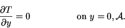
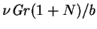
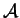

The continuum equations to be solved here are (2.52)-(2.55). At the vertical
walls, the boundary conditions are the same as used for the narrow cavity
limit: (4.18)-(4.21). Assume the floor and
ceiling to be solid surfaces, so that they are nonslip
The thermal boundary conditions on the floor and ceiling are not unimportant,
since they are known in the analogous single fluid heat transfer
problem to influence
the penetration of convective effects into the core (Daniels & Wang 1994).
For the purposes of the present problem, however, it is adequate to consider
the simple adiabatic condition (cf. equation 2.25):
|  | (5.4) |
The boundary conditions are summarized in figure 5.1.
The speed scale in these equations is  which expresses a balance between buoyancy and viscosity in the momentum equation, if diffusion and conduction dominate the species and energy equations. In narrow cavities (large ) there may occur a region sufficiently far from the horizontal surfaces in which the fluid does not accelerate vertically. It was shown in chapter 4 that the nondimensional velocity based on this speed scale is independent of the Grashof number (see especially equation 4.27). Thus, if a solution at one Grashof number is used as an initial guess for one at a different number, for which there is also a fully developed region, no change should be required from the guess to the new solution in the intersection of the two regions. This scale, and the numerical method presented in the following section, would not be appropriate for highly convective flows. When vertical velocity boundary layers occur, the speed varies more as the square root of the Grashof number (McBain 1995, fig. 12; 1997b, fig. 2), reflecting the steepened density gradients near the hot and cold walls. The range of parameters for which a fully developed region may be expected is discussed later in this chapter (§5.5).